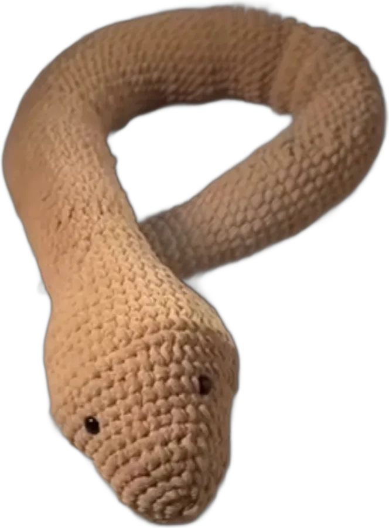
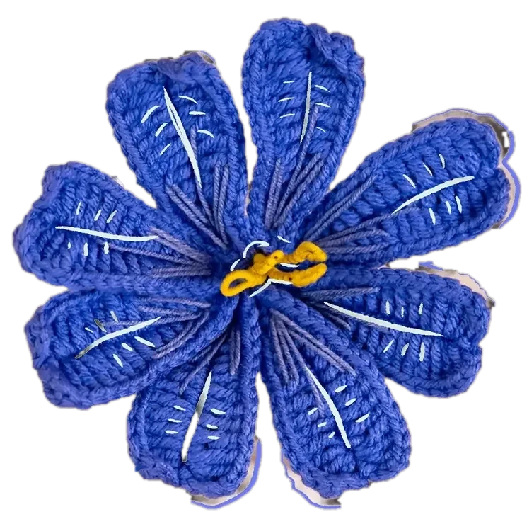
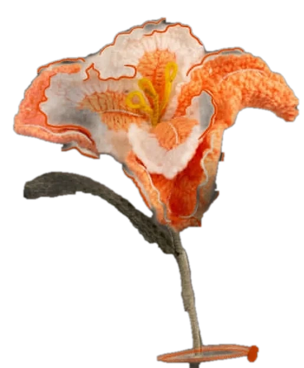
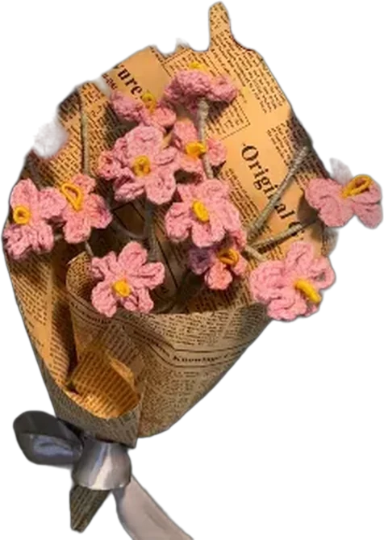
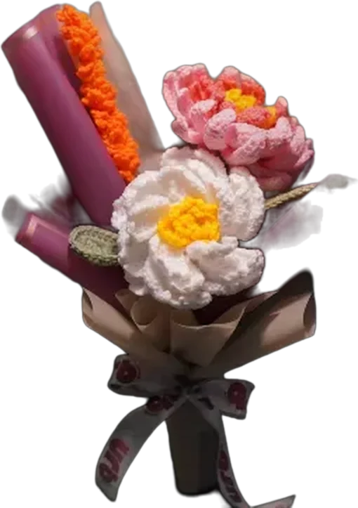
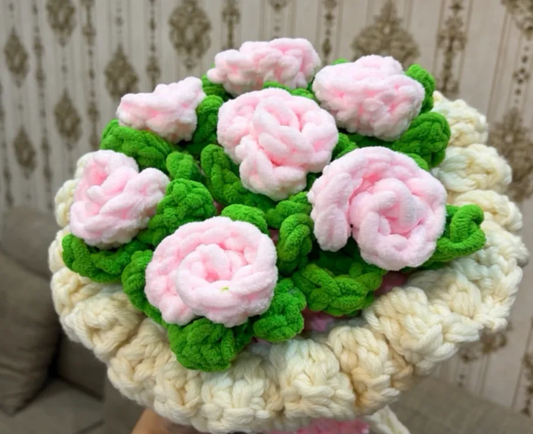
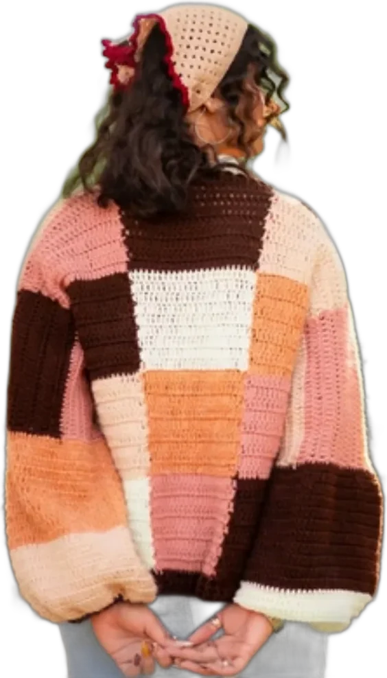
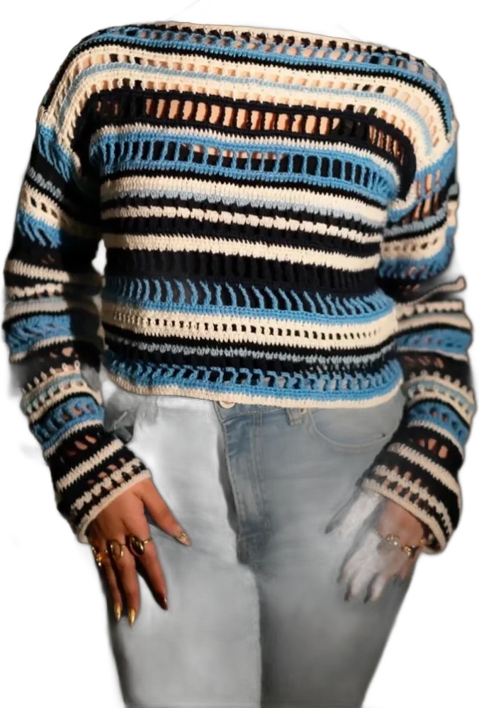
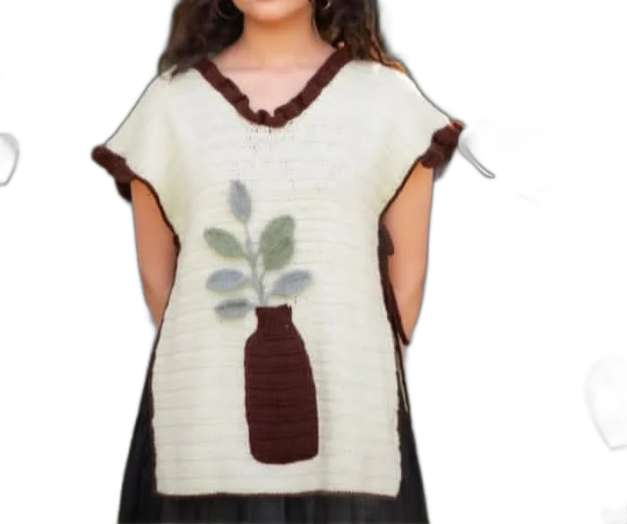

July 2025
Meet Mr Snake.
“My first ever biggest project.” A long, cuddly snake in sand-beige yarn, introduced in a 22-second reel.

her story, from her own posts
“When you have a business, you do work everywhere.”
shop.urb, on Instagram
URB is one maker crocheting flowers, plushies and clothes by hand, in gardens, on benches and at home, and posting the whole journey. This page follows it post by post.

july 2025 to today
July 2025
“My first ever biggest project.” A long, cuddly snake in sand-beige yarn, introduced in a 22-second reel.

July 2025
A round, chonky crochet cat, with a stitched whisker face and a tail that stands up straight.

August 2025
Keyrings: a pink daisy bouquet in 35 minutes, a coffee cup with a face in 2 hours. “Get your fav keyring from shop.urb. DM to place an order.”


August 2025
Single stems, 11 inches tall, in washable yarn. Lewisia for resilience and endurance. Corn poppy for deep emotion, comfort and shared memory. Iris for hope, wisdom, courage and faith.



August 2025
Small, forever bouquets: forget-me-nots, peonies, dahlias and lavender, wrapped in paper and ribbon.


September 2025
A collection of big, round plushies in pink, purple and black, teased before it was released. One more big baby was added the same day.
October 2025
A bouquet you can hug: chunky pink roses on green leaves in a cream ruffled wrap. (“Pasandida aurat” means “favourite woman”.)

November to December 2025
Orders leave in the berry-pink urb box, with petal prints and a pink string handle.

December 2025 to January 2026
Cardigans, tops and vests in cotton yarn. A patchwork cardigan in blush, peach and chocolate; a striped top that takes 12 hours to make; a white poncho top with a vase and leaves.



Now
Crochet gifts layered into wrapped baskets, finished with a bow. Still made one stitch at a time, wherever she happens to be.

read it out loud
Say it with the little word on the logo: urb eloved. Ur beloved. Every piece is made to be given to someone who is.
Every stem is crocheted, not bought in.
No water, no wilting, no waste.
If a design shows one left, there is one left.
what we make
ur beloved.